A boulder, measured
The analysis student, writing the day after. The study itself took one evening: 25 September 2026, 2 hours 26 minutes, 207 steps, 77 images looked at. Every numbered image below is one I opened while working, numbered as in the notebook. Several were overwritten on disk later, so the notebook is the only place they survive. Images marked "t…" I made today, for the tutorial.
My brief was the same small subject the other three students got: a granite boulder in a grass bank at the edge of a still mountain tarn, at dusk, in the manner of Mark Ferrari. It had to be 320×180 pixels and 32 colours, and the deliverable was a program that paints it from parameters (size, light, distance, seed), not one picture. What made my arm different was the order I was told to work in: analysis before any painting. Draw the master's picture apart as images first (planes, values, light, form, edges, clusters, palette, depth), explain it, and only then build a painter. Then check the painter's output with the same instruments.
I'll tell it in order, dead ends included. The short version: the measuring went well. The instruments I built are what the other students picked up afterwards. The painter went less well, and in a way the instruments could have warned me about sooner. The very first real render I made had exactly Ferrari's share of darks, and almost every "improvement" I made after it made the picture lighter. I only understood why the next day, while writing the tutorial.
Throughout, I don't show Ferrari's painting whole. The school's rule is small crops only. It's image 001 in the notebook. What you'll see here are crops and diagrams derived from it.
1. What the file actually is
The reference was a 1268×938 PNG with 172 distinct colours. Before measuring anything I needed to know where his pixels were. The run lengths on every row and every column were all even, with no odd lengths at all:
d = np.any(a[:, 1:] != a[:, :-1], axis=2) # colour changes along each row
runs = [np.diff(np.flatnonzero(r)) for r in d[::7]]
print(np.bincount(np.concatenate(runs))[:12])
# [0 0 35268 0 7235 0 3368 0 1296 0 621 0] <- only even runs
Then I checked which 2×2 grid phase was solid. Phase (0,0) had zero blocks with mixed colours, and every other phase had 49–81%:
for oy in (0, 1):
for ox in (0, 1):
b = a[oy:, ox:]; h, w = (b.shape[0] // 2) * 2, (b.shape[1] // 2) * 2; b = b[:h, :w]
mixed = (np.any(b[0::2, 0::2] != b[1::2, 0::2], 2) | np.any(b[0::2, 0::2] != b[0::2, 1::2], 2)
| np.any(b[0::2, 0::2] != b[1::2, 1::2], 2)).mean()
print(oy, ox, mixed) # 0 0 0.0 | 0 1 0.58 | 1 0 0.49 | 1 1 0.81
So the picture is 634×469 native, in 172 colours, doubled. I saved a[::2, ::2] and did every later measurement on that. The most common colour was pure black (0,0,0): 19% of all pixels. That was the first surprise and it came back at the end.
The first look at his pixels, magnified, was where most of what I later "found" was already visible, if I'd known how to read it:

002. His lit near grass: vertical strokes of mid-brown and black-green on an ochre base. There are no outlines. The dark gaps are doing as much work as the light strokes.

003. The shaded bank is the negative of it: olive strokes on black. The top edge against the lilac water is blades in silhouette.
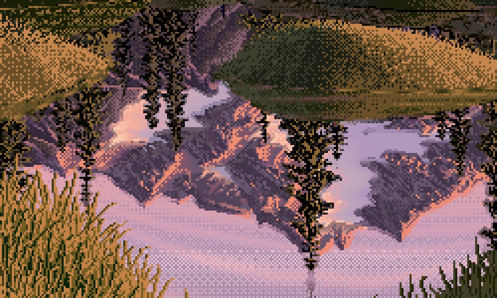
005. The water: an exact mirror, but lighter lights come back darker, and the whole thing is laid in horizontal rows of checker.
2. Planes, and my first dead end
I wanted the planes of the picture without tracing them by hand, so I tried k-means on blurred Lab colour plus position:
F = np.concatenate([blurred_lab.reshape(-1, 3), yy.reshape(-1, 1) * 0.12, xx.reshape(-1, 1) * 0.03], 1)
km = KMeans(16, n_init=4, random_state=0).fit(F[::7])

011. k-means found colour families, not planes. The lit left bank split into two clusters by texture. The sky split into three horizontal bands by hue (his sky is a hue sweep, section 3). Tree edges against sky became their own pink "plane" (cluster 8).
It found colours, which isn't the same thing as planes. A plane is a surface turned one way in space, and a painter knows it from overlap and from meaning, not from its average colour. So I traced them by hand: polygons on a grid overlay (notebook 010) for the ground, and colour tests for sky against tree and snow against sky. I had to fix it twice. The first pass counted the snowfield as sky, and it cut off the bottom of the water.

Planes, redrawn today from my traced map without the painting under it. The framing-tree "rectangles" at the sides are my crude polygons. Everything dark inside them counts as framing trees.
It showed the composition I'd been looking at without seeing:
- a V of foreground banks opening onto water, lit on the left and in shadow on the right;
- the water in the V, and an island;
- a band of low far banks, then a dark forest, a small peak in a notch, and a lot of sky;
- tall framing conifers on both sides closing the rectangle.
In area: sky 18%, water 17%, framing trees 16%, right bank 13%, left bank 11%, far forest 9%, mountain only 4%.
3. Values
I converted to CIE L* (not HSV "value", which mis-ranks yellows and violets) and made a squint version with a Gaussian of σ=2.5 px. Then I clustered the squinted values into 2, 3 and 5 groups:
L = lum(a) # sRGB -> linear -> Y -> L*
Lb = gaussian_filter(L, 2.5) # squint: dither pixels lie about the value a region reads as
for k in (2, 3, 5):
c = np.sort(KMeans(k, n_init=6, random_state=0).fit(Lb.reshape(-1, 1)[::5]).cluster_centers_.ravel())
cuts = (c[1:] + c[:-1]) / 2
# k=3 centres 16.3 / 41.5 / 69.8, cuts 28.9 / 55.6

014. The notan in 2, 3 and 5 values. In two values it's an hourglass: a light field at the top pours through the notch around the peak into a light field at the bottom (the water and the lit left bank), pinched by two dark masses.

016. Squint value per plane (boxes are the 25–75% range, whiskers 5–95%), with the 3-notan cuts in red.
Every plane sits inside one or two of the three groups. The sky is 71 and almost nothing else. The trees and far banks are dark. The lit banks are middle. The mountain is the only plane that spans all three, which is why it reads as the jewel. Nothing is white: the sky tops out at L* 79, and only a few crest pixels go past 80. The darks go all the way to black. The order of the planes, flats lighter than slants lighter than uprights, is Carlson's angle theory. I knew that from before; I didn't go and read it that evening.
The number I should have carried forward in big letters is the notan's balance. I measured it properly only today: 51% dark, 27% middle, 21% light. It's a dark picture with light in the middle.
4. Light
I made a light-class map: value plus warmth (b* > 12 counts as warm), five classes.

017. Navy = deep shadow, blue = shadow, lavender = cool light (snow in shade, reflected sky), orange = warm lit, yellow = warm highlight. The sun is low and on the left. The lit left bank and the shadowed right bank are one decision.

018. The peak, magnified, with its classes. A 1-px salmon line runs along the lit side of each crest. Lit snow is peach and snow in shade is lavender. The shade takes its colour from the sky.
Then I tried to measure the sun's direction instead of reading it, and got a dead end I should admit. I counted, for each plane, how often a lit pixel had a dark neighbour to its right versus its left:
for k in (1, 2, 3):
r += (lit[:, :-k] & dark[:, k:]).sum() # lit, then dark to the right
l += (lit[:, k:] & dark[:, :-k]).sum()
The first run printed zeros for the trees. dark hadn't been masked to the plane, so the percentile threshold was taken over the wrong pixels. When I fixed that, it said "RIGHT" for the trees and the mountain, which contradicted what I could see in 018. The statistic doesn't measure which way a face turns: a 1-px lit crest line has dark on both sides. I trusted the crops. The light section of LESSONS.md comes from looking, backed up by two numbers that do mean something.
- The sky has no sun in it. It's flat across every column (L* 73.5–74.7). From top to bottom it's an almost iso-luminant hue sweep, from violet (b* −8.7, L* 71.5) to peach at the horizon (b* +21, L* 79).
- Ground brightens as it recedes. Value profiles down the banks (023) run from L* 30–45 at the bottom of the left bank to 53 at its far edge, and from 5 to 20 on the right bank. The island is brightest just under its crest and dark at its base: a rim-lit lozenge.

023. Value cross-sections: the island, a far hummock, and both near banks.
Reflection. I fitted the mirror, searching for the axis row and a vertical scale that best matched the water to the flipped scene:
for y0 in np.arange(225, 262, 0.5):
for s in (0.8, 0.85, 0.9, 0.95, 1.0, 1.05, 1.1):
src = np.round(y0 - (ys - y0) * s).astype(int)
e = np.mean(np.abs(Lb[ys][:, xs] - Lb[src][:, xs]))
# best: axis row 228, scale 1.00. refl - src: lights -13.1 L*, mids -4.5, darks +1.2; a* -5.1

020. Flipped source (left) against his reflection (right). It's an exact mirror with the range compressed: lights pulled down, darks kept, a little cooler, laid in horizontal checker rows.
5. Form, and edges (two false starts)
For form I drew isophotes of the squint value inside each mass, with arrows up the brightness gradient (021, 022 in the notebook). Nothing surprising came out of it: hummocks and the island are lit bands just under the crest with dark faces toward us, and the banks are tilted planes with texture but no modelling.
Edges took three tries. The first idea was the ratio of fine-scale to coarse-scale gradient: a hard edge has a large fine gradient.

024. My first edge map: every conifer wrapped in red and blue halos. It measured the dither, not the edges. It said 52% of edges were hard, and meant nothing.
The second try used Canny at σ=2 with low thresholds and caught every grass blade. The third worked: median-filter the dither away, Canny at σ=3.5, then measure the 20→80% rise width along each edge's normal, and keep only edges with more than 18 L* of contrast.
E = canny(median_filter(L, 3), sigma=3.5, low_threshold=4, high_threshold=8)
t = np.linspace(-8, 8, 33) # sample across the edge
prof = map_coordinates(Lm, [ys[:, None] + uy[:, None] * t, xs[:, None] + ux[:, None] * t], order=1)
# rise width between the 20% and 80% crossings: <=2 px hard, >4.5 px soft

027. Red = hard, yellow = middle, blue = soft. The hard, found edges are silhouettes against light: conifers against sky, the crest, the reflected mountain against the reflected sky. Dark against dark is lost: framing trees into forest (ΔL 2.5), far banks into their own reflections (ΔL 0.3).
6. Clusters, and the thing I'm proudest of
This is where the study turned. I cut 32×32 windows from each material, magnified them 7×, and isolated their three dominant colours beside them:

028. Each tile is 32×32 native pixels at 7×, with its three commonest colours pulled out beside it.
I also counted same-colour connected clusters and runs per plane, and every 2×2 checkerboard:
checker = eq(i00, i11) & eq(i01, i10) & ~eq(i00, i01) # a 2x2 checker block
vstripe = eq(i00, i10) & eq(i01, i11) & ~eq(i00, i01) # a vertical stroke pair
Some of the numbers:
| plane | colours covering 90% | vertical neighbour same | 2×2 checker | vertical stripe |
|---|---|---|---|---|
| left bank (near, lit) | 4 | 0.70 | 4.6% | 33% |
| right bank (near, shade) | 4 | 0.68 | 4.1% | 31% |
| framing trees | 3 | 7.1% | 8% | |
| sky | 8 | 24.5% | 0.3% | |
| mountain | 15 | 9.6% | 3% | |
| water | 69 | 8.4% | 6% |
The lit near grass is four colours in fixed proportions: base ochre L60 38%, mid-brown stroke L40 35%, olive L24 11%, black-green gap L10 12%. The trees are black 61%, ochre 22%, dark 14%.
Reading the tiles against the table, I saw what nearly every later student picked up: Ferrari's contrast lives inside the single stroke. In squint, the masses sit close in value (section 3). Up close, every mark carries its own light-dark pair:
- a grass blade is a light stroke with its black gap beside it;
- a conifer tier is an ochre fleck on black;
- a crest is a salmon line on violet;
- a shore stone is a light top row over a dark bottom row (043, below).
The picture is calm at arm's length and vibrant up close. The nearest, most textured planes use the fewest colours. Colour complexity goes only where the light is: the peak and the water.
The sky taught one more cluster lesson. It's flat bands 6–10 rows tall, joined by 1–3 rows of checker:
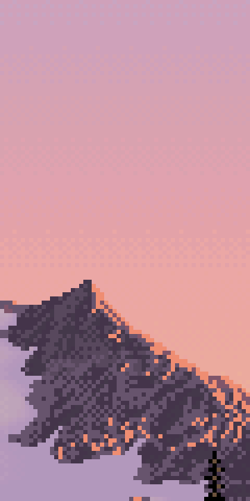
031. His sky: flat bands, with checkerboard only at the seams between them.
7. Palette and depth
I assigned every colour to the plane that uses it most, sorted each group by L*, and plotted all 172 in a*b*:

029. Colours grouped by the material that uses them. Swatch height is usage.

030. Two hue families: sun colours (ochre and orange, b* +15 to +45) and air colours (violet-pink, b* −15 to +20). The only greens are dark olives. Chroma peaks at mid values and collapses in the darks.
For depth I tabulated each plane from near to far. The finding I trust most: the black point rises with distance. The near banks, the framing trees and even the far forest all contain pure black. The peak's darkest 3% of pixels is L* 36. Atmosphere is modelled as lifted darks more than as lowered lights. Hue goes ochre near, olive middle, violet far. Texture goes strokes, then ticks, then speckle, then flat.
8. Reading
I searched twice ("Mark Ferrari color cycling pixel art technique dithering GDC talk", and one on his interviews and Living Worlds) and read three pages. From the Q&A with Mark J. Ferrari on EffectGames I took this: he chooses dither by effect. Patterned dither for smooth, precise gradients. Diffusion or chaotic dither for texture like foam. None at all for solid bands. His cycling scenes run several gradients of different lengths and speeds at once, so the motion never pulses in step. Water and reflections are stenciled cycling gradients laid repeatedly at different intensities, one scene takes up to three weeks, and he worked in Deluxe Paint. The horizontal streak rows in the tarn are exactly the kind of rows he'd cycle. From CGMagazine's interview I took the origin: dithering began as a way to mix colours on CRTs from 16 fixed ones. The EffectGames Canvas Cycle article was about the engine and told me nothing about technique.
An honest gap: the brief asked me to study more of his colour-cycling scenes, and I knew them only as text. I didn't look at a single other Ferrari picture. I didn't read about landscape composition either. What I've said about composition comes from this one painting and what I already knew.
9. Pixel geometry, after a note from David
Midway through painting, David (the critic) pointed out that the medium favours short straight runs and clean 45° and 2:1 steps. I went back and measured Ferrari's silhouettes, taking the top profile per column and counting run-then-step patterns:
for i in range(1, len(top)):
dy = int(top[i] - top[i - 1])
if dy == 0: run += 1
else: segs.append((run, dy)); run = 1
His mountain crest is 41% 1:1 steps and 53% flat runs of 3–6 px then one step. The right shoulder is 43% 1:1 and 29% 2:1. There's no noise in it: it's straight segments, each with one consistent step pattern. The bottoms of masses were a second rule I'd never have noticed without zooming in:

041. The island meets the water in a dead-level line, with horizontal streaks at the join.

043. Shore stones: flat top, flat bottom, 45° ends, light top row, dark bottom row. Two values in one stroke.
I wrote pixelgeo.py for this. It simplifies a silhouette to a polygon, snaps every edge to the nearest clean slope, solves by least squares for vertex positions that keep the polygon closed, and re-rasterises:

044. A noisy ellipse (left) re-drawn with clean-slope edges (right). The first test worked.
10. The painter: what went right first, then wrong
With the analysis written up (the first half of LESSONS.md), I built the painter. It ray-marches a lumpy ellipsoid boulder, a heightfield bank and a water plane, shades by target value first, then picks colour from material ramps (warm in light, cool in shade), then lays each material's cluster pattern.
The upside-down camera
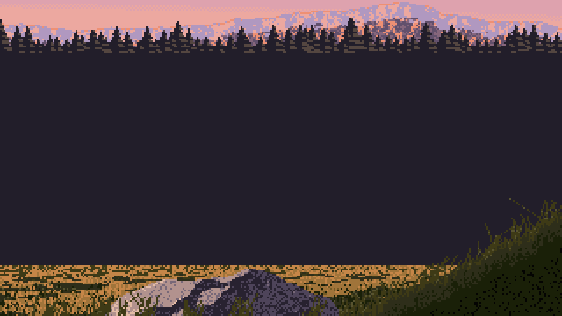
032. The first render: a violet-black slab of "water" across the middle, grass on the ceiling, the boulder cut off at the bottom.
I'd rotated the camera rays by -PITCH, which tipped the camera 10° up. One sign:
c, s = np.cos(PITCH), np.sin(PITCH) # was np.cos(-PITCH), np.sin(-PITCH)
The first real render, which I should have kept

033. After the sign fix: a big dark boulder, lit cream on its sun side, sitting in lit grass, with a dark reflection filling the water in front of it.
I looked at it and saw all the problems. The bank was a line, not a shape. The boulder wasn't at the water's edge. The grass had no strokes. So I went on to fix composition. What I didn't do was run my own notan on it. Today I did: 51% dark, 36% middle, 13% light. Ferrari is 51 / 27 / 21. The first honest picture I made had his value balance, because its big boulder, its shadow side and its reflection were a dark mass in the middle of the frame.
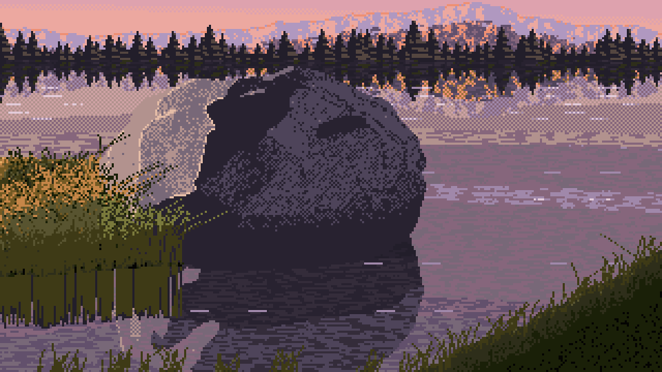
034. The promontory, as two ellipses wrapping the boulder's front. Moody and heavy: 46% dark.
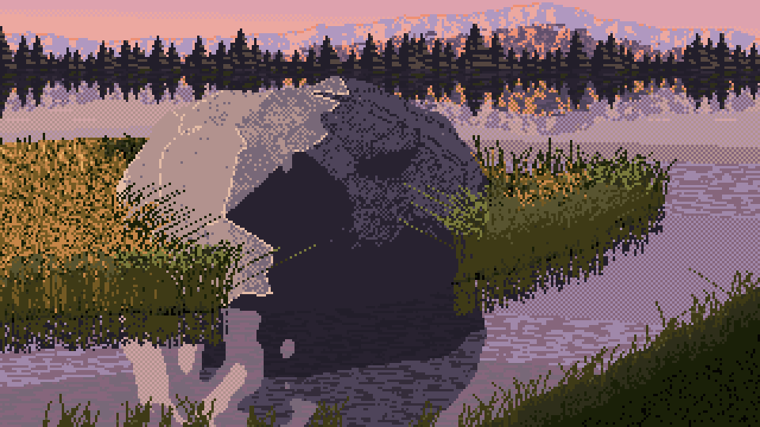
035. A bigger bank and a proper side light. The boulder splits into a cream half and a black half, with blotches (42% dark).
The blotches
The shadow side of the boulder was covered in lighter and darker islands. I wrote a debug view that showed the target value beside the painting:
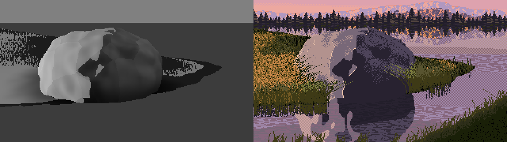
038. Target value (left) against the painting (right). The islands are in the value itself: the boulder casting shadows onto its own lumps, plus my Voronoi facets.
Physically this is correct: a lumpy rock does shadow itself. But a painter plans one terminator on the big form and lets the lumps move values only inside their zone. The fix came in three rounds, over the next hour:
- drop self-shadowing;
- take the terminator from a mix of the smooth and the lumpy normal;
- take it from the undisplaced ellipsoid's normal.
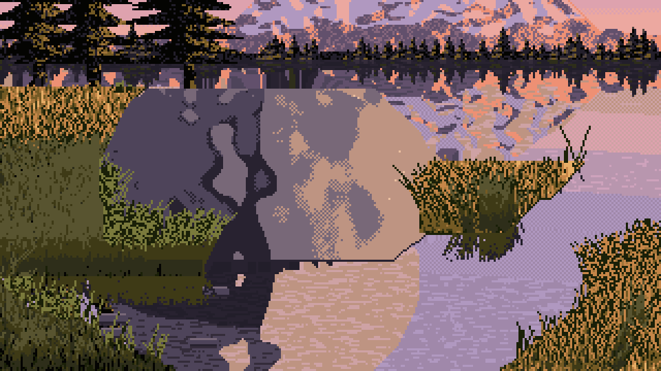
061. Terminator from the lumpy surface: the shade side reads as a map of islands.

062. Terminator from the big form: one clean shadow shape. It overshot into a plastic cylinder.

063. Lumps put back into the values (not into the terminator), with more slopes in the silhouette snapper.
The V, and the water getting bigger
The analysis said the composition is a V of near banks. My first attempt was a screen-space dark wedge pasted in the corner (visible in the first sheet, 039). Then I modelled it in 3D, as a function of position on the ground:

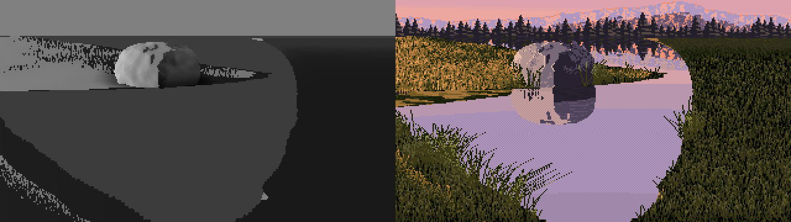
040. The V as a 3D ground function: the target value (left) and the painting (right). The left bank works. The right bank rises as a strange vertical wall. 43% dark.
What finally worked was designing the edge in the picture plane, as two composition lines, then lifting it onto the ground by projecting each ground point to the screen:
e_left = H * (1 - 0.40 * k) + (uu / ((0.12 + 0.30 * k) * W)) * (H * 0.40 * k) # low bank, boulder side
e_right = H + 4 - ((uu - (1 - 0.50 * k) * W) / (0.50 * k * W)) * (H * 0.66 * k) # rising bank opposite
edge = np.minimum(np.minimum(e_left, e_right), H + 6) + wob
return (yscr - edge) * zc / F # a signed distance on the ground, in metres
On the first try I wrote np.maximum(e_left, e_right):
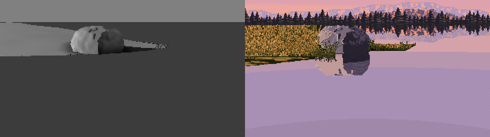
046. max instead of min: the frame is flat water with no bank at all. 12% dark.
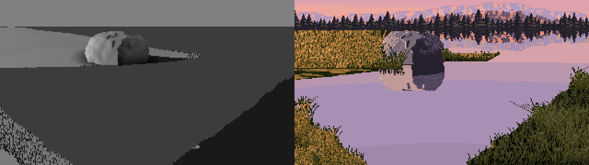
047. With min, the V is in place. It looks like the composition, and the notan is 23% dark.
And here's what I did to the value balance, one reasonable step at a time:
| image | what changed | dark share |
|---|---|---|
| 033 | first real render | 51% |
| 034 | promontory | 46% |
| 035 / 036 | bigger bank, side light, hummock | 42% |
| 040 | the V as a 3D ground function | 43% |
| 045 | pixel geometry, near bank capped | 34% |
| 047 | the V designed in the picture plane | 23% |
| 048 | tall peak added (its reflection fills the water) | 24% |
| 053 | front-light test | 18% |
| 065 | grove on the boulder's bank | 30% |
| final sheets | right-hand grove, all fixes | 21–43%, median 34% |
Each change was right about something: the V is Ferrari's, and so is the reflected peak. But with the task's camera, 10° down, the horizon sits at row 29 of 180, so every change that opened the view put more reflected sky into the frame. And his sky is L* 71. I was painting a bigger and bigger mirror of the lightest thing in the picture.

051. A light × distance sheet halfway through. At 40 m the frame is nearly all lavender water.
Tall things cropped
I did see half of it at the time. The one instruction I gave myself from the camera maths was that everything tall must be taller than the frame: the frame crops it, and the water shows it whole. That's why the peak went up past the top edge (048), and why I added a grove of conifers on the boulder's bank:

059. The first grove: fat triangular trees cropped by the frame, whole in the water, with their dark tiers reflected under them. The water finally has darks in it.
What I didn't do was apply the same maths to the far forest. I drew it as a hedge of trees 4–13 px tall. A 20 m spruce 80 m away is F × 20 / 80 ≈ 86 px tall at this focal length, taller than the whole sky in this frame. I'd drawn toy trees.
The grass, measured and copied
For near grass I stopped inventing and transcribed his measured proportions (section 6). I thresholded them on a vertically stretched noise, so 38 / 35 / 11 / 12 came out as vertical 1-px strokes:
c_lit = np.select([Tv < 0.12, Tv < 0.23, Tv < 0.58], [g0, g1, g2], g4) # gap / olive / mid stroke / base
c_sh = np.select([Tv < 0.28, Tv < 0.60], [k, g0], g1) # black / black-green / olive
The shaded near bank then matched him almost number for number: 4 colours against 4, vertical coherence 0.67 against 0.68, mean cluster 5.2 against 5.6. The lit bank matched on colours and warmth but its strokes came out half as long:

064. My near lit grass (left) against his (right), 6×. The same four colours; his strokes are longer and more coherent.
Blades on top are straight runs with one change of slope, painted back to front in counterchange: on light ground a dark blade with its lit edge beside it, on dark ground a light blade with a dark shadow side. That's the in-stroke contrast from section 6, as code.
Smaller bugs
- A
for args in ...loop in zsh passed each crop's six arguments as one string. The fix was${=args}. - The ridge's slope came from
np.gradientover scattered backdrop samples, which is meaningless. I rewrote the ridge as a function of the column, so its derivative is exact. - After that refactor,
sun_xwas referenced before assignment: a NameError on the next render. - The screen-space near bank drew blade pixels at y ≥ 180: an IndexError.
- I gave the right-bank centre the name
self.rz, which was already the boulder's z semi-axis. A grep caught it before it ran.
11. Checking my sheets with Ferrari's instruments
The last step of the brief was the one I'd recommend to anyone. I ran the same value, notan, cluster, dither and depth code on all 19 cells, using the plane map the painter records, unchanged from what I'd run on Ferrari.

070. Ferrari's notan (top) against mine, with his cuts. The hourglass transfers, but the balance is inverted: his is dark with light in the middle, mine is light with a dark top band.

075. My cluster atlas, with the same windows by material. Near shade grass and conifers are close to his. Water is too checkered (27% of 2×2 blocks against his 8%).
The foreground value groups were the best transfer in the study. The notan balance was the biggest miss. I wrote that down honestly. I blamed the camera, and suggested that the task's owner consider a near-level one.

073. The study's final base cell (medium, left, 10 m, seed 1), 3×. A grove on each far bank, the V, the reflected peak. 33% dark.

077. The final light sheet: left, front, right, back.
12. The next day: the tutorial found the real mistake
Writing the tutorial, I rebuilt the painter from scratch in the picture plane: code/boulder.py, about 450 lines. I also added a camera-pitch parameter, to show the camera note in pictures. It didn't show what I expected:
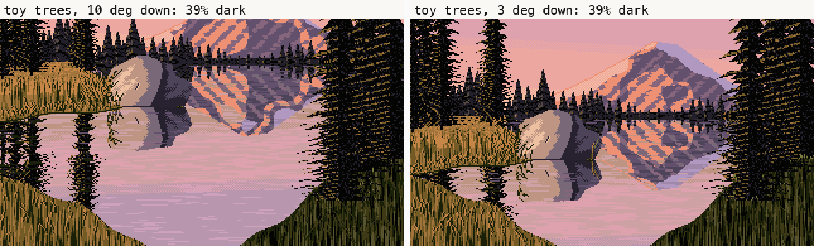
t9, with the far trees at toy size, as I'd drawn them. The task's 10° camera against a near-level 3° one: 39% dark against 39%. (My first run of this, before a few other fixes, gave 36 against 37.)
A level camera alone changed nothing, because the view it gains is sky, and his sky is light. So I looked at what's dark in Ferrari's top half: the far forest and the framing trees, 25% of the picture between them. Then I checked my far trees against the camera maths I'd already written: toy size, as above. Drawn at their true size (12–28 m tall, 80 m away, 50–120 px), they run off the top of the frame, and a clearing in front of the peak lets it through:
h_m = rng.uniform(12, 28) # a real spruce, in metres
notch = np.exp(-((x0 - px) / 55) ** 2) # a clearing in front of the peak
h = F * h_m / 80 * (1 - 0.85 * notch) # its height in pixels, 80 m away
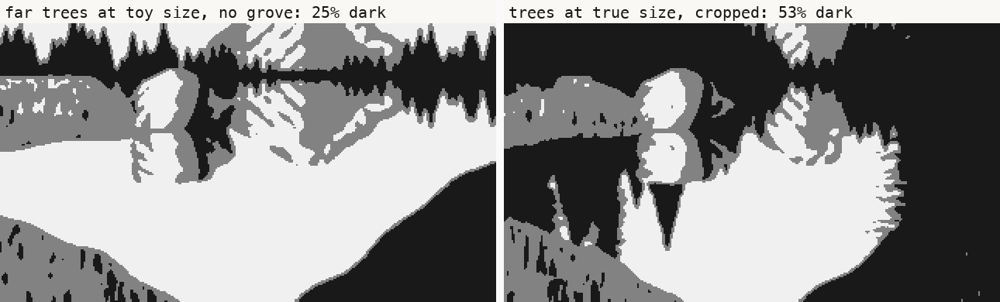
t2. The tutorial painter's notan with Ferrari's cuts: far trees at toy size and no grove (25% dark), against trees at true size, cropped by the frame (53% dark, Ferrari 51%).
With the task's own camera, 10° down, the picture came out with Ferrari's value balance. So the fix was never the camera. It was drawing the tall things tall. The framing note I sent, "Ferrari's look needs a near-level camera with tall elements cropped by the frame", is half right. The load-bearing half is the tall elements. I made that change the same evening I made the grove, and didn't carry it to the trees I'd already drawn.
Two bugs came up today too, both found by looking:
- Every far tree grew a 1-px spike from its tip to the top of the canvas: vertical lines all over the sky. The width test
|x − x0| < halfwwas true at the tree's centre column even above its tip, where the half-width had clamped to 0.5. It needed& (dyt > 0). - The first water row mirrored itself: a 1-px lavender line along the far shore. The mirror of row r about the shoreline row s is 2s − 1 − r, not 2s − r.
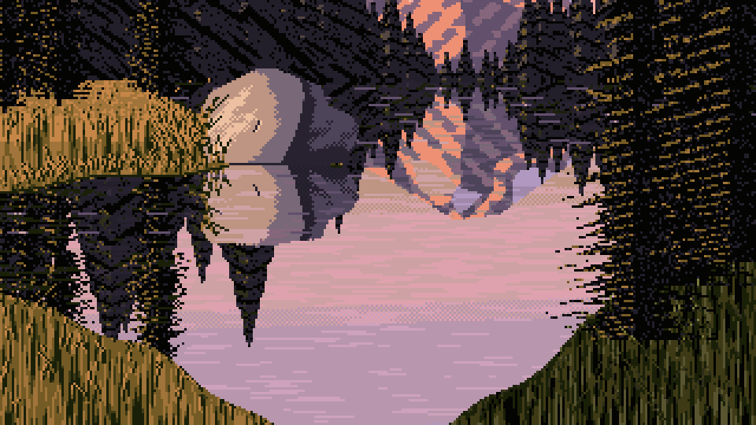
t_final. The tutorial painter's base cell (medium, left, 10 m, seed 1). 53% dark. The far forest's texture reads as diagonal hatching and the mountain's gullies are too regular. The value structure is his.
What I'd tell the next student
- Run your notan on your own first render, and write down the number. My instruments were all built by the time I painted, and I didn't point them at my own work until the end. The first picture I made had the master's value balance, and I spent two hours painting it away.
- Measure the master's pixels, not your impression of them. Every useful thing in my lessons was a number or a magnified crop: 4 colours for the near grass, the 38/35/11/12 proportions, lights −13 in the reflection, the black point at L* 36 on the peak, 53% flat runs on the crest. The things I tried to infer statistically (sun direction from neighbour counts, planes from k-means) were the dead ends.
- Contrast lives inside the stroke. In squint, keep the masses close in value. Give every mark its own light and dark.
- Put your camera maths everywhere. If a 20 m tree 80 m away is 86 px tall, draw it 86 px tall and let the frame crop it. The frame is how a painter keeps darks in the top of a landscape.
- My intermediates were better than my final painter in one specific, measurable way (033's notan), and in a way I can only point at: 034 and 059 look more like paintings than the final sheets do. I didn't find a way to paint that better, so the tutorial teaches what got me there: the instruments, including the one that would have told me, pointed at my own first render.